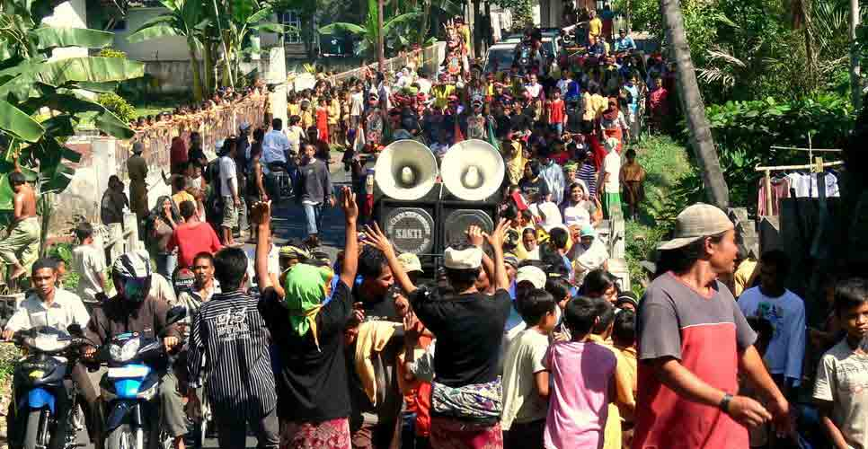

Sosiologi Kebudayaan Sosial
Pengertian
Sosiologi budaya dapat diartikan bahwa segala sesuatu yang dilakukan oleh individu atau masyarakat yang bagaimana mereka melakukan sebuah interaksi social, relasi yang dilakukan dalam kehidupan sehari – hari untuk dapat dikatakan dengan sebuah kebudayaan dalam masyarakat. Budaya masyarakat ini mencakup segala aspek mulai dari sistem pengetahuan, keyakinan, bahasa, kesenian, mata pencaharian, dan lain-lain. Kebudayaan terbagi ke dalam sakral dan profan, sakral dalam artian ritual kepercayaan yang diakukan oleh komunitas ataupun masyarakat keagamaan merupakan bentuk manifestasi ekspresi budaya yang sakral. Sedangkan budaya profan atau sekuler, dapat diartikan dalam bentuk budaya atau praktik-praktik yang bersifat duniawi, seperti olahraga, latihan atau kursus yang dapat mengasah skill itu dapat dikatakan budaya profan atau sekuler. Terdapat dua teori mengenai Sosiologi Kebudayaan, yang pertama, ada dari tokoh sosiologi berkebangsawanan prancis bernama Emile Durkheim. Dengan teori pendekatan structural fungsional-nya, Durkheim mengatakan bahwa culture atau budaya baik yang bersifat materiil maupun immateril mempunyai kekuatan untuk menjaga nilai solidaritas, itu dapat wujudkan dengan cara individu berpartisipasi dalam sebuah ritual ataupun kebudayaan, artinya individu ikut melestarikan dan juga menjaga eksistensi kebudayaan tersebut, sehingga semakin kuat nilai-nilai kebudayaan tersebut yang pada akhirnya akan menguatkan solidaritas kelompok masyarakat dengan saling menguatkan dalam menjaga kebudayaan masyarakat setempat.